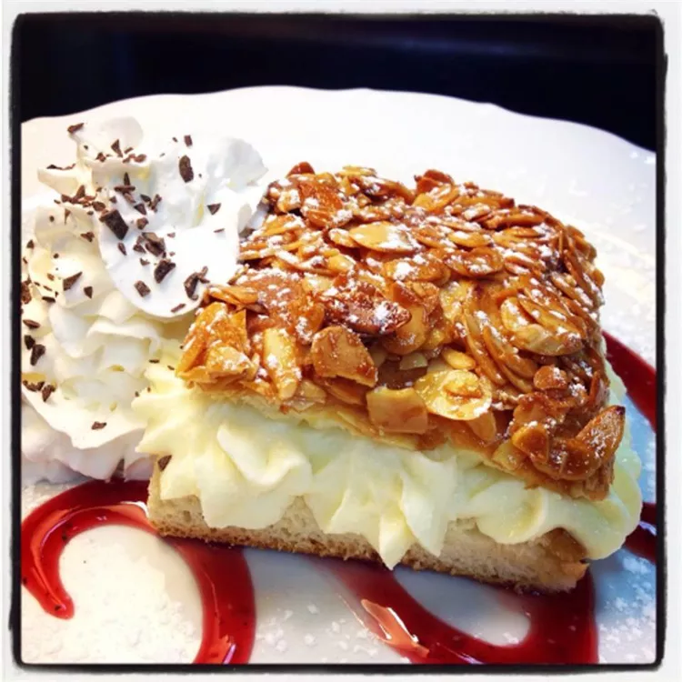

Bienenstich (Bee Sting Cake)
This German bee sting cake is my favorite. It has a bread-like crust with a sugary-almond crunchy topping and a vanilla pudding filling. Mmm... A must-try dessert!

Ingredients
- 1 tablespoon active dry yeast
- 1 ⅝ cups all-purpose flour
- 2 tablespoons white sugar
- 1 pinch salt
- ¾ cup lukewarm milk
- 3 tablespoons butter
- 3 tablespoons butter
- 1 ½ tablespoons confectioners' sugar
- 1 tablespoon milk
- ⅝ cup sliced almonds
- 1 tablespoon honey (Optional)
- 1 ½ cups milk
- ⅓ cup cornstarch
- 1 tablespoon white sugar
- 1 egg, beaten
- 1 teaspoon almond extract
- 1 cup heavy whipping cream
- ½ tablespoon cream of tartar
Description
- Step
Combine flour, yeast, 2 tablespoons sugar, salt, 3/4 cup milk, and 3 tablespoons butter in a large bowl. Turn dough out onto a lightly floured surface. Knead until smooth and elastic, about 15 to 20 minutes. Place in a well-greased bowl; cover and let rise in a warm place for 1 hour, or until doubled.
- Step
Punch down dough. Roll out to a 1/2-inch thickness. Spread into a greased 8-inch square baking pan. Cover and let rise for 30 minutes.
- Step
Melt 3 tablespoons butter and confectioners' sugar in a saucepan. Add almonds and 1 tablespoon milk. Remove from heat, and stir in honey. Spread evenly and carefully onto dough. Allow dough to rise for an additional 30 minutes. Meanwhile, preheat the oven to 400 degrees F (200 degrees C).
- Step
Bake in the preheated oven for 20 to 25 minutes, or until crust turns golden brown. Cool completely on a wire rack.
- Step
Dissolve cornstarch in a little milk. Combine 1 1/2 cups milk, cornstarch, and 1 tablespoon sugar in the top of a double boiler. Heat while stirring until thickened, about 2 to 3 minutes. Add in beaten egg, and keep stirring for about 2 more minutes, or until thick. Remove from heat and stir in extract. Chill, covered, in the refrigerator for at least 1 hour. Beat whipping cream with cream of tartar until stiff. Fold into chilled pudding.
- Step
Cut cooled almond bread into 1 1/4x2-inch rectangles; slice each one horizontally into halves. Fill with pudding mixture. Chill, and serve cold.